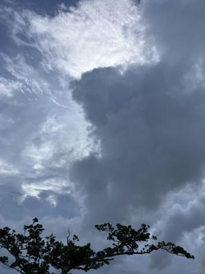
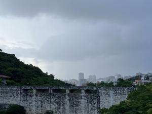

うるがいの話 ある日
最新: 脳神経外科【うるがいの話 ある日】とは 一日だけのプログです
『うるがいの話』の最新一日だけのプログで、通信料が少なく経済的だ。カニの画像をクリックすると全ての日付が載る『うるがいの話』サイトを表示します
|
|
【うるがいの話】 うるがい(ｳﾙｶﾞｲ urugai)とは、『もずくがに』の名前でとても大きくなります。 |
|---|---|
|
|
【カミマヤーの話】 猫のことを方言でマヤーといいます。カミマヤー（kamimayaa）とは、神の猫のことです。 |
|
【たながぁの音楽】 たながぁ（ﾀﾅｶﾞｰ tanagaa）とは手長えびのことで、何種類かあり大きいのは車 エビぐらいになります。 |

|
【ぶながぁの話】 ぶながぁ(ﾌﾞﾅｶﾞｰ bunagaa)とは、赤い髪の毛、赤い身体、そして身長は１ｍ２０ｃｍ ぐらい、川の蟹を食べているの目撃された。場所は沖縄県国頭郡大宜味村のと ある村僕の隣近所に住んでいる爺さんから、聞いた話です。 |
|
|
【ギーマの話】 ギーマ(giima)とは、山原の里山に咲くスズランに似た、 花を付けます。実は食べられます、 気が付くと口の周りが紫になっています。 |
2025年07月30日 (水）脳神経外科
16:27

フラフラするといい神経質なヨメは、脳神経外科へいった。ＭＲＩ
を撮ったが、特に異常はないとのこと。気になるのであれば耳鼻科
内科へ行くようにと言われた。私が、長年右肩が痛いので、病院へ
行きたいと言ったらコロナが流行っているから、止めたらと言われ
ので遠慮していたのだが、来週行こうかなと考える。
医師と看護師に感謝 ヨメが知っている人 ７６歳 琉球新報より
先日、思わぬ病名を告げられ入院した。日課のジョギング中にふら
つき、体調の異変を感じた。かかりつけの病院の医師に紹介状を書
いてもらい、浦添総合病院で精密検査を受けた。
その結果、心房細動、狭心症の疑いがあると診断された。医師から
病名を告げられ頭が真っ白になり、大きなショックを受けた。担当
医師から今後の治療方針などの説明を受けた。「左心房の鼓動に異
常が見られ、血栓ができて、これが脳に達すると脳梗塞を引き起こ
す原因になる。カテーテルアブレーション治療を行う」。・・・
職場でもよくジョギングしていたとのこと。ウーン、７６歳になっ
ても頑張っていたのですね。ジョギングは、心臓に負担なのですヨ
。そういいながら、私はジョギングしないと体の調子が、悪くなる
ので続けます。
車を運転していると、激しい雨が降った。ベランダに干している洗
濯物は大丈夫かと心配したが、家では降っていなかった。下は、昨
日の金城ダムでにわか雨に襲われました。

今日は、津波で大変だった。本土への旅行は行けないと思った。